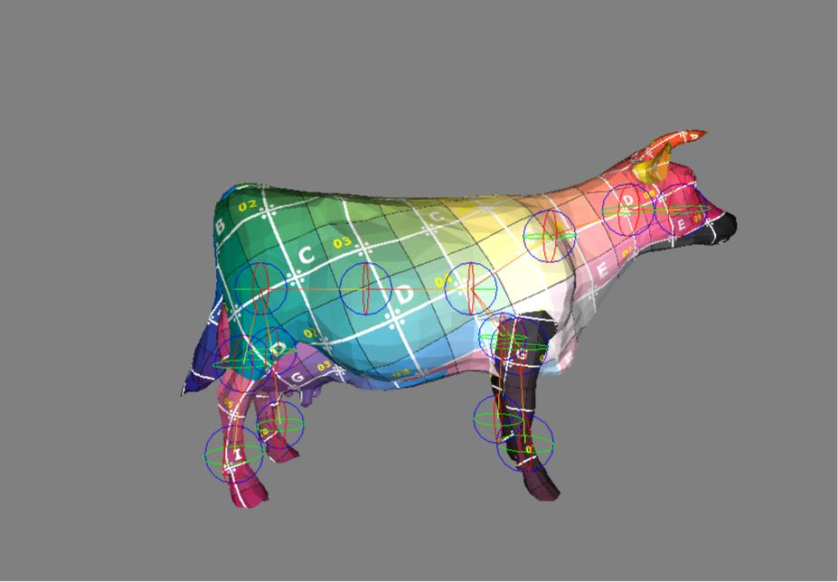

Hello, my name is XIAODONG YANG. I am currently pursuing my second master's degree in game development at USC. My interest is in game programming, and I hope to deeply learn the technologies used in games so that I can create breathtaking games in the future.
Projects
Legend of Arcane Heros
Description:
- LoAH is a business simulation game, where players act as the headmaster of a magic academy and train students to become great mages while growing the academy.
- A large, complex game system with:
- (a)Character attributes.
- (b)“Real” events (characters move and act on the map).
- (c)“Virtual” events (logged actions that affect stats but don’t appear on the map).
- (d)A basic combat system.
- A tutorial system.
- A tutorial system.
Animation driven movement and IK
Description:
- Implemented a physical component to handle movement and collisions.
- Developed an animation system using finite state machines (FSM) with blending for smooth transitions.
- Integrated animation-driven character movement for natural locomotion.
- Implemented IK using FABRIK.
- Delivered a system where the character moves fluidly with animations, maintaining foot alignment on uneven surfaces like stairs.
XPBD-based Cloth Simulation
Description:
- Implementation of XPBD-based cloth dynamics framework, including rendering module, GUI interface, input handling system, scene management, and actor components.
- Support for various constraints (stretching, bending, shrinking, self collision).
- Collision handling using spheres and cubes.
- Utilization of spatial partitioning (spatial harshing and KD-tree methods) for performance optimization.
Mini Minecraft
Description:
- Generated terrains such as plains, caves, rivers, and mountains using random noise algorithms, allowing players to remove and place blocks within the world.
- Achieved efficient scene rendering by rendering only visible surfaces, including texture loading and lighting, with post processing effects and texture animations for underwater scenes.
- Implemented a physics system for player movement, including collision detection and handling, supporting both gravity-based and flight modes.
- Utilized multithreading to handle dynamic terrain expansion and scene updates, enabling parallel computation of chunk types and VBO (Vertex Buffer Object) generation.
Mini Maya

Description:
- Implemented OBJ file parsing and stored models using a Half-Edge data structure with a spherical coordinate camera system for efficient navigation and geometry operations.
- Designed and developed a real-time rendering pipeline using OpenGL, supporting texture loading, shading, and lighting through custom GLSL shaders.
- Integrated Catmull-Clark subdivision for smoother model surfaces with multiple subdivision levels.
- Built a skeleton system with Dual Quaternion Skinning by parsing JSON bone hierarchies for realistic joint transformations and blending.
2D Game Engine

Description:
- Developed a flexible event system for handling input and window events efficiently.
- Implemented an OpenGL-based batch renderer to optimize rendering performance and reduce GPU state changes.
- Utilized an Entity-Component System to manage entities and components within scenes.
- Built scene serialization and deserialization features and integrated performance analysis tools.
Canopy Quest
Description:
- Personal project of mine to explore a roguelike dungeon game.
- Engineered a dynamic terrain system for Canopy Quest, generating ladders, platforms, traps, chests, monsters, and items with random seeds.
- Created AI for multiple monsters as well as weapons and ensured the seamless recreation of the game world.
Puzzle Chamber

Description:
- Personal project of mine to explore a VR game.
- Designed gameplay interactions for various objects in the Puzzle VR Game to improve user engagement and overall gaming experience.
- Used OpenXR to enable character movement, teleportation, grabbing, ray interaction, and other features in the Puzzle Chamber VR Game.
- Crafted UI and executed the implementation of information prompts, operation settings, and scene transitions with fade during teleportation.
Box Slash
Description:
- Personal project of mine to explore my first unity game.
- Design UI with real-time display and features.
- Enable cutting with visual feedback, implementing continuous item generation with coroutines and particle effects for diverse cutting effects.
PDE-based point cloud compression framework
Description:
- Academic project of mine focus on point cloud compression.
- Strengthened and executed an attribute prediction framework on the TMC13 platform by 12.00%.
- Enhanced algorithm performance by streamlining theoretical models, resulting in improved encoding speed.
Poster
Game Jam
Demon May Laugh (Global Game Jam 2024)
Description:
- A poor soul who died suddenly due to overwork came to hell. He must complete the demon's killing tasks to please Satan in order to regain his life. The tasks, maps, and enemies in the game are randomly generated.
- Utilize a finite state machine to manage the movement, attacks, and animations of player and monsters .
- Responsible for procedural content generation of maps.
- Responsible for UI implementation, including the game's start menu, character attribute bars, and displaying randomly generated tasks and buffs.